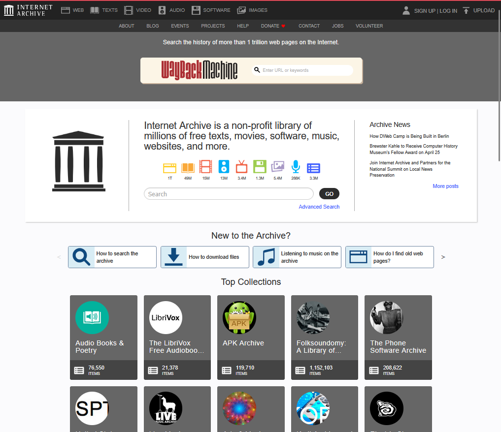
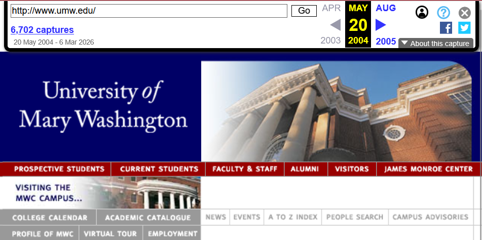
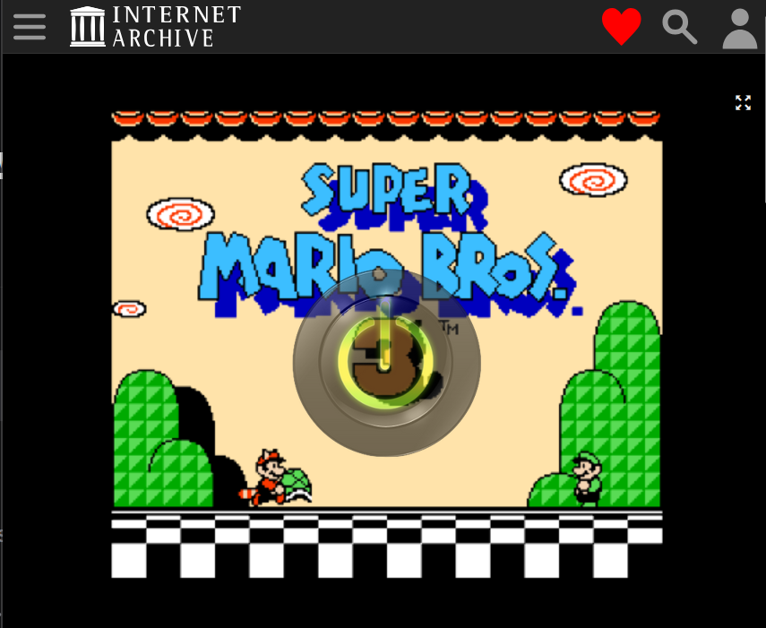
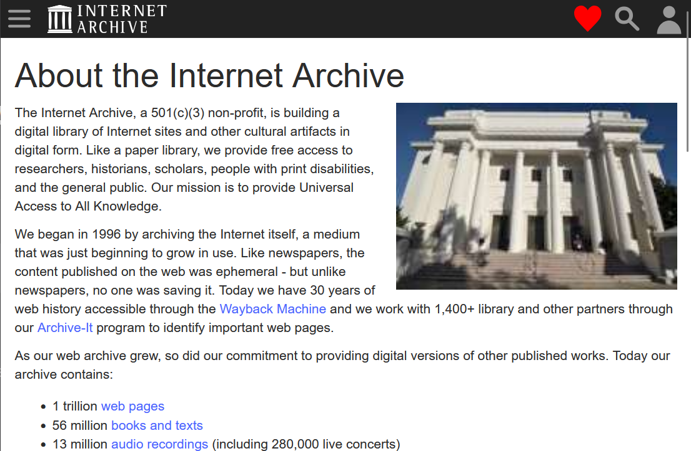
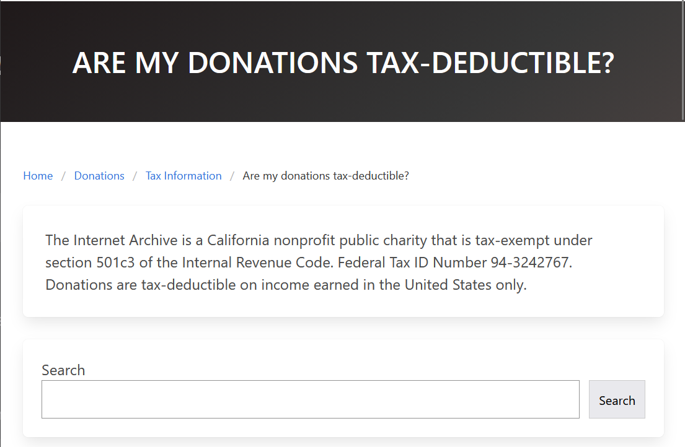
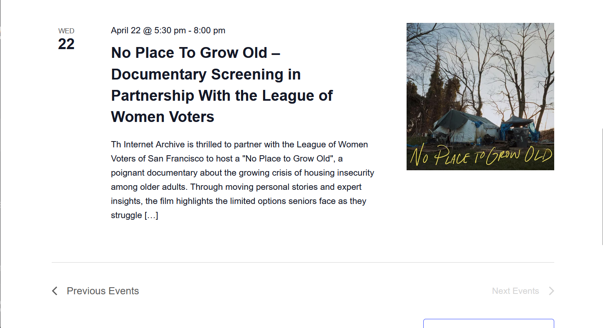

The result is created using a 10 question questionnaire that users respond on a scale of 1 (strongly disagree) to 5 (strongly agree). Results are then scored by subtracting one from odd item response and for even items, subtracting user response from 5. This re-scales the responses to be 1-4 with 4 being the most positive. The sum of the responses is then multiplied by 2.5 to convert the range of possible values to be 0-100. Want to try it? Put your scores in the boxes next to the questions and click the calculate button at the end!
Score Breakdown:

2:19.89

1:11.26

00:05.19

0:44.23

1:56.00